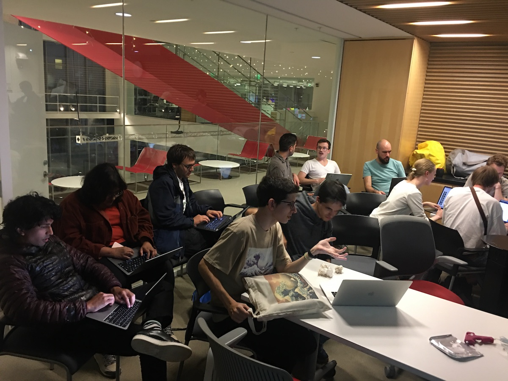

Trash to Treasure Interactive Workshop
This event was organised for MIT Media Lab students to get creative whilst making sculptures from discarded materials for a themed event that was held on Friday 30th September. The theme of the event was: 'A Trash OdySea' and so the workshop focused on repurposing discarded materials as art materials to create sea-themed sculptures. This was not only a thalasic meditation on the amount of pollution that accumulates in Earth's oceans, but was an oppertunity for student to use text-to-image AI to aid in the creative process.
The workshop practice allowed a way for students to explore their role as the alchemist - through the process of using AI generated images to help guide the transformation of trash in to pieces of art.
This process was guided by Stable Diffusion, as participants used textual prompts to generate images through a Stable Diffusion Google Colab notebook. These images were then used to help individuals explore the potential space for sculpture designs under this theme. The pieces made at this workshop were installed at the 99 Fridays event and were enjoyed by many!
Here is a link to the slideshow we used overviewing how to use Stable Diffusion.
